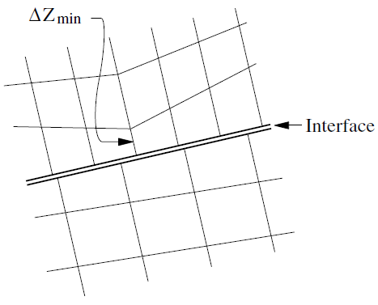
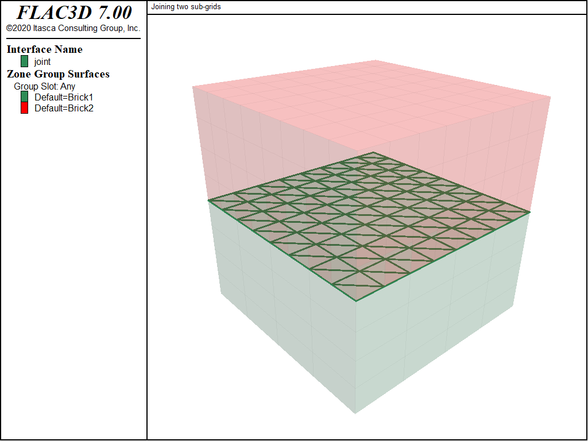
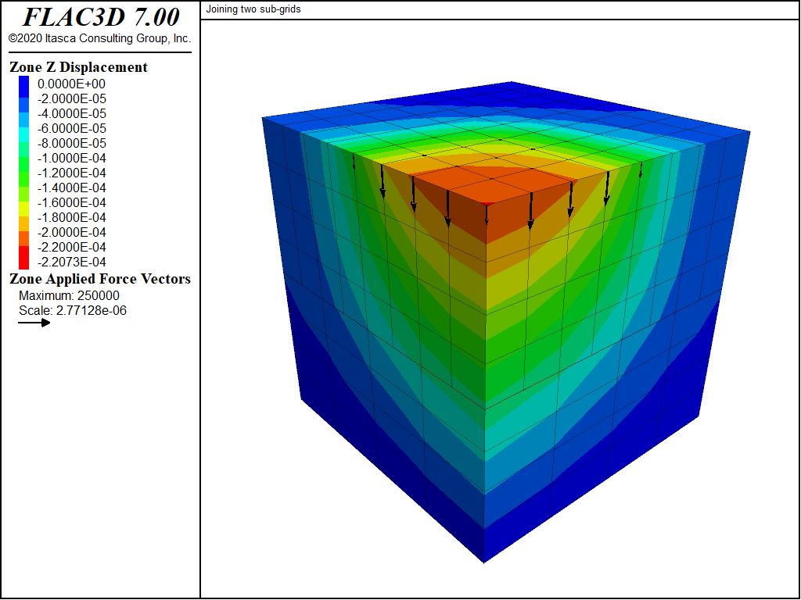
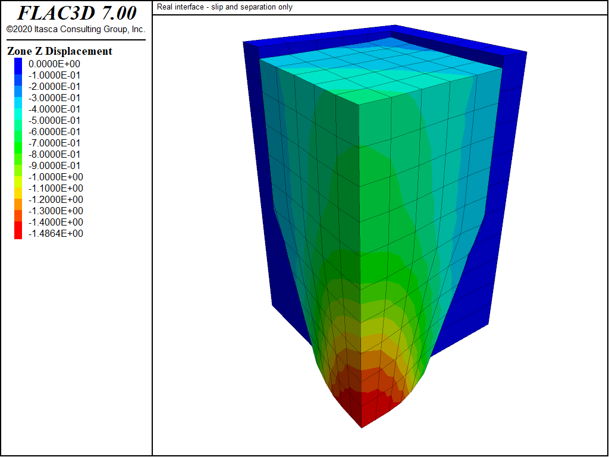
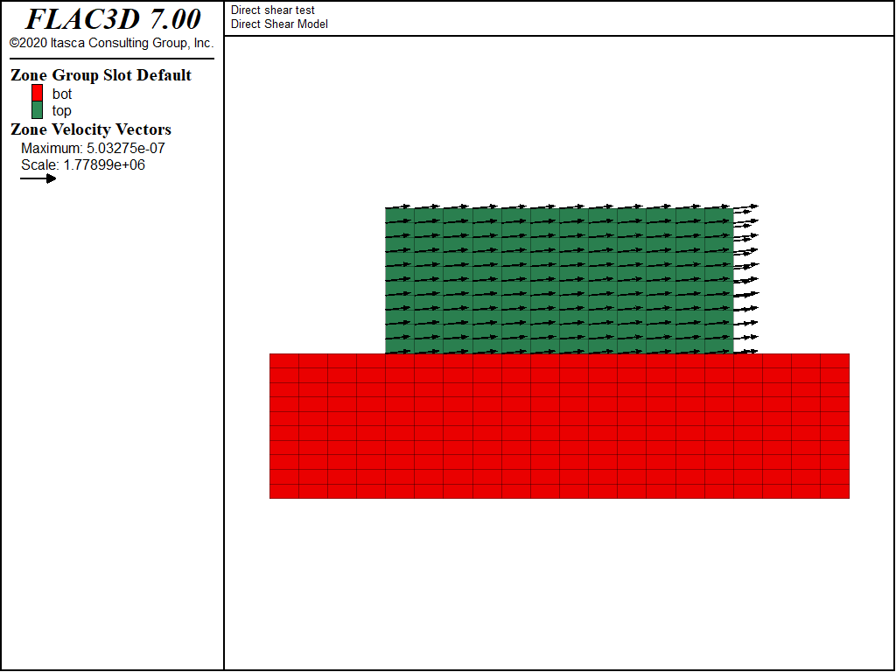
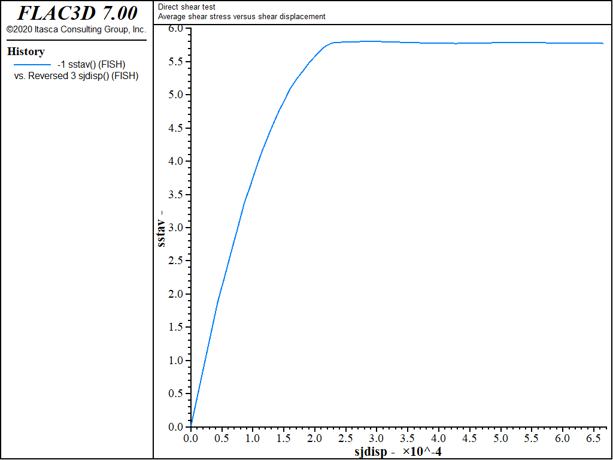
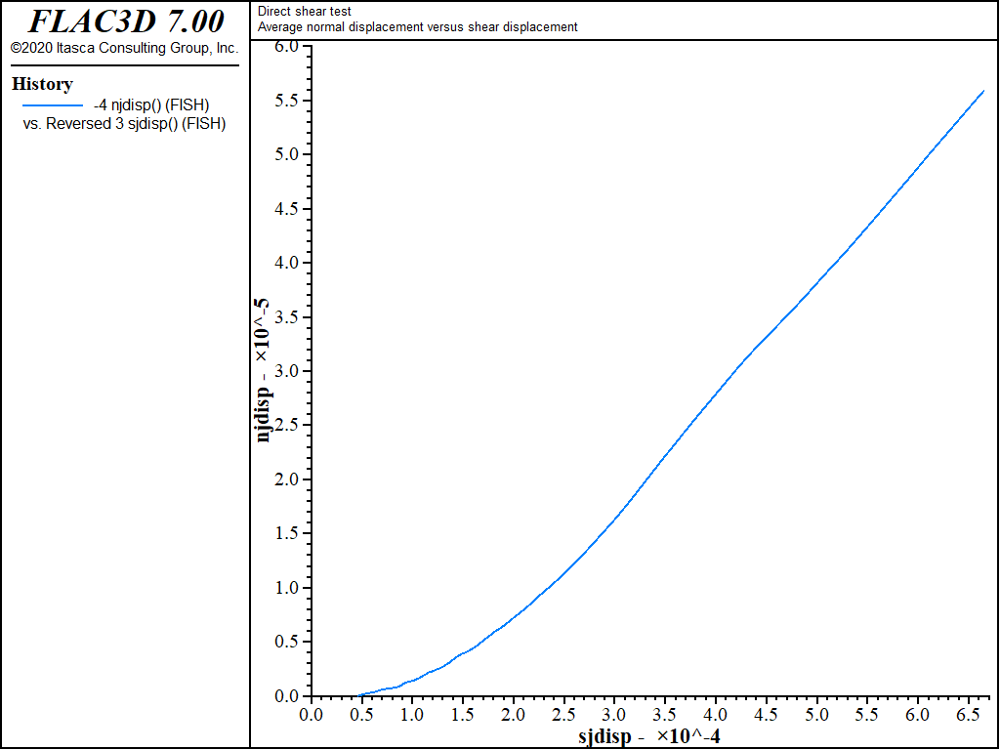
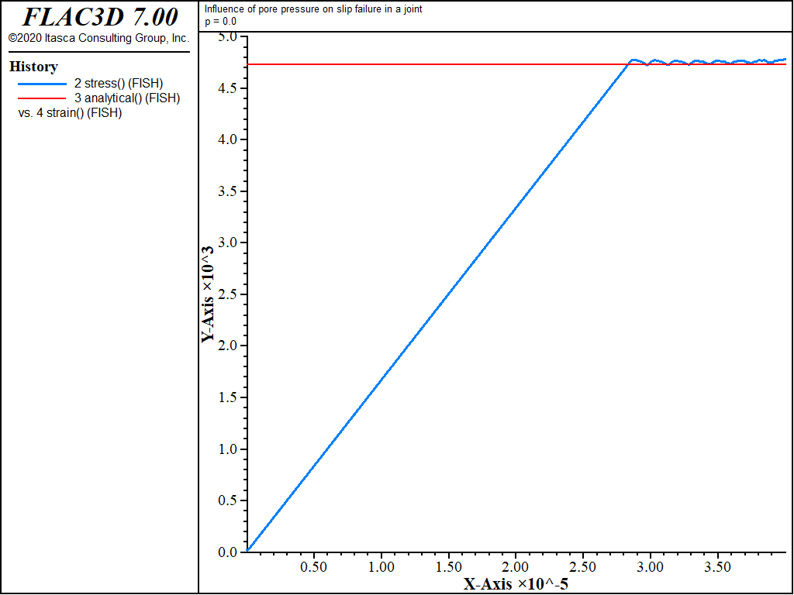
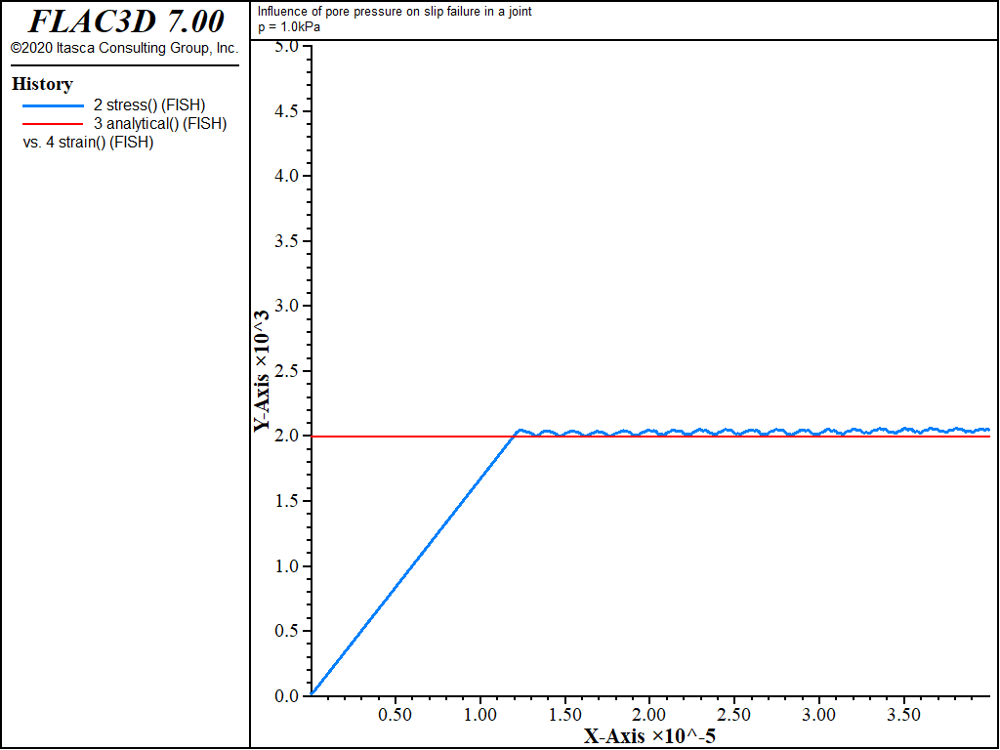

材料性质的选择
为接触面指定材料性质（特别是刚度）取决于接触面的使用方式。常见的有三种可能。接触面可以是：
- 用于将两个子网格连接在一起的人为装置；
- 相对于周围材料较刚硬、但在预期荷载作用下可以滑动并可能张开的真实接触面。 （该情形还包括刚度未知或不重要， 但会发生滑动和/或分离的情况，例如料仓中摩擦材料的流动。）；或
- 足够软弱以致影响系统行为的真实接触面（例如含软黏土充填的节理，或含有严重破碎材料的岩脉）。
下面详细考察这些情形。
用于连接两个子网格的接触面
如果可能，应使用 zone attach 命令连接子网格。
使用 zone attach 命令连接子网格比使用
zone interface create 命令计算效率更高。有关 zone attach 命令的说明和限制，
见 连接相邻的原始形状（Connecting Adjoining Primitive Shapes）。
在某些情况下，可能需要使用接触面连接两个子网格。
这类接触面通过 设置接触面节点属性（zone interface node property） 命令赋予高强度性质，从而防止任何滑动或分离。（这相当于 FLAC 中的“胶合”接触面。）还必须提供剪切刚度和法向刚度；不需要摩擦力和黏聚力值。人们（尤其是熟悉有限元方法的人）很容易为这些刚度取很大的值以防止接触面上发生移动。然而，FLAC3D 会根据刚度进行“质量缩放”（见 数值稳定的力学时步确定（Mechanical Timestep Determination for Numerical Stability）），如果指定非常大的刚度，响应（以及解的收敛）将非常缓慢。建议采用与接触面小变形相协调的最低刚度。一个经验法则是，将 \(k_n\) 和 \(k_s\) 取为最刚硬相邻网格单元等效刚度的十倍。网格单元在法向方向上的表观刚度（以单位距离的应力表示）为
其中：
\(K\) 和 \(G\) 分别为体积模量和剪切模量；以及
\(\Delta z_{\min}\) 为相邻网格单元在法向方向上的最小宽度（见图 1（Figure 1））。
\(\max\) [ ] 记号表示取与接触面相邻的所有网格单元中的最大值（例如，可能有多种材料与接触面相邻）。

图 1：刚度计算中采用的网格单元尺寸。
为说明该方法，考虑图 2（Figure 2），其中两个网格划分不同的子网格通过 “Subgrids.dat” 中的命令连接，并在上表面左侧部分承受压力荷载。相应的项目文件 “Subgrids.f3prj” 位于文件夹 “datafiles\Interface\Subgrids” 中。
Subgrids.dat
model new
model large-strain off
model title "Joining two sub-grids"
fish automatic-create off
zone create brick size 4 4 4 point 0 (0,0,0) point 1 (4,0,0) ...
point 2 (0,4,0) point 3 (0,0,2)
zone create brick size 8 8 4 point 0 (0,0,3) point 1 (4,0,3) ...
point 2 (0,4,3) point 3 (0,0,5)
zone interface 'joint' create by-face range position-z 3
zone interface node property stiffness-normal 300e9 ...
stiffness-shear 300e9 ...
tension 1e10 ...
shear-bond-ratio=1
zone gridpoint initialize position-z -1.0 add range position-z 3 5
zone cmodel assign elastic
zone property bulk 8e9 shear 5e9
zone gridpoint fix velocity-z range position-z 0
zone gridpoint fix velocity-x range union position-x 0 position-x 4
zone gridpoint fix velocity-y range union position-y 0 position-y 4
zone face apply stress-zz -1e6 ...
range position-z 4 position-x 0,2 position-y 0,2
model solve
model save 'join.f3sav'
\((K+4G/3)\) 的值为 15 GPa，与接触面相邻的最小网格单元尺寸为 0.5 m。因此，我们将剪切刚度和法向刚度均取为 150 × 109/0.5 （即 \(k_n = k_s = 3 \times 10^{11}\) Pa/m）。所得的 \(z\) 位移云图如图 3（Figure 3）所示。
将该结果与 本图（this figure） 中所示单一网格的结果进行比较。 该图与图 3（Figure 3）采用相同的比例和云图间隔。 两幅图几乎完全相同，表明接触面对行为没有很大影响。
如果接触面两侧的材料相似，且刚度变化仅出现在横向方向，则方程(1)给出的规定是合理的。然而，如果接触面一侧的材料比另一侧刚硬得多，则应对较软一侧应用方程(1)。在这种情况下，整个系统的可变形性由软侧控制；将接触面刚度取为软侧刚度的十倍，可确保接触面对系统柔度的影响最小。


图 2：由接触面连接的两个不相等子网格。


图 3：竖向位移云图——两个连接的网格。
真实接触面——仅滑动与分离
在这种情况下，我们只需提供一种使一个子网格相对于另一个子网格滑动和/或张开的方式。摩擦（可能还有黏聚力、剪胀和抗拉强度）是重要的，但弹性刚度不重要。此处采用 用于连接两个子网格的接触面（Interface Used to Join Two Sub-grids） 中的方法确定 \(k_n\) 和 \(k_s\)。然而，其他材料性质则赋予实际值（建议见 所有性质都具有物理意义（All Properties Have Physical Significance））。
作为示例，我们可以在料仓流动问题中允许滑动，如图 4（Figure 4）所示，其对应的数据文件为 “BinFlowSlip.dat”。相应的项目文件 “BinFlowSlip.f3prj” 位于文件夹 “datafiles\Interface\BinFlowSlip” 中。黏结强度未设置（即默认为零）；接触面刚度设为相邻网格单元等效刚度的大约十倍。


图 4：“料仓”中摩擦材料的流动。
BinFlowSlip.dat
model new
model title "Real interface - slip and separation only"
fish automatic-create off
; 创建材料网格单元
zone create brick size 5 5 5 ...
point 0 (0,0,0) point 1 (3,0,0) point 2 (0,3,0) point 3 (0,0,5) ...
point 4 (3,3,0) point 5 (0,5,5) point 6 (5,0,5) point 7 (5,5,5)
zone create brick size 5 5 5 point 0 (0,0,5) edge 5.0
zone group 'Material'
; 创建料仓网格单元
zone create brick size 1 5 5 ...
point 0 (3,0,0) point 1 add (3,0,0) point 2 add (0,3,0) ...
point 3 add (2,0,5) point 4 add (3,6,0) point 5 add (2,5,5) ...
point 6 add (3,0,5) point 7 add (3,6,5) group 'Bin1'
zone create brick size 1 5 5 ...
point 0 (5,0,5) point 1 add (1,0,0) point 2 add (0,5,0) ...
point 3 add (0,0,5) point 4 add (1,6,0) point 5 add (0,5,5) ...
point 6 add (1,0,5) point 7 add (1,6,5) group 'Bin1'
zone create brick size 5 1 5 ...
point 0 (0,3,0) point 1 add (3,0,0) point 2 add (0,3,0) ...
point 3 add (0,2,5) point 4 add (6,3,0) point 5 add (0,3,5) ...
point 6 add (5,2,5) point 7 add (6,3,5) group 'Bin2'
zone create brick size 5 1 5 ...
point 0 (0,5,5) point 1 add (5,0,0) point 2 add (0,1,0) ...
point 3 add (0,0,5) point 4 add (6,1,0) point 5 add (0,1,5) ...
point 6 add (5,0,5) point 7 add (6,1,5) group 'Bin2'
; 为各组分配模型
zone cmodel assign mohr-coulomb range group 'Material'
zone cmodel assign elastic range group 'Bin1' or 'Bin2' or 'Bin3' or 'Bin4'
; 分离网格单元，并创建两个界面
zone separate by-face new-side group 'Interface' ...
range group 'Material' group 'Bin1' or 'Bin2'
zone interface create by-face range group 'Interface' ;group 'Bin1'
; 指定参数
zone property shear 1e8 bulk 2e8 fric 30 range group 'Material'
zone property shear 1e8 bulk 2e8 range group 'Bin1' or 'Bin2'
zone property density 2000
zone interface node property stiffness-shear 2e9 ...
stiffness-normal 2e9 friction 15
; 设置边界条件
zone gridpoint fix velocity-x range union position-x 0 position-x 6
zone gridpoint fix velocity-y range union position-y 0 position-y 6
zone gridpoint fix velocity-z range position-z 0 group 'Bin1' or 'Bin2'
; 监测历史记录
zone history displacement-z position (6,6,10)
zone history displacement-z position (0,0,10)
zone history displacement-z position (0,0,0)
; 设置
model large-strain on
model gravity 10
; 循环计算
model step 3000
model save 'bin'
所有性质都具有物理意义
在这种情况下，性质应取自真实节理的试验[1]（按尺寸效应进行适当缩放），或取自与被模拟材料相似材料的已发表数据。然而，用于连接两个子网格的接触面（Interface Used to Join Two Sub-grids） 中关于合理使用的最大刚度的意见在此同样适用。如果实际的法向刚度和剪切刚度小于相邻网格单元等效刚度的十倍，则使用实际值没有问题。 如果该比值远大于十，则求解时间将明显长于比值限制为十的情形，而系统行为没有太大变化。 为提高求解效率，应认真考虑减小所给的法向刚度和剪切刚度值。
如果法向刚度 \(k_n\) 很低，还可能出现相互贯入的问题。应对系统中施加典型应力（\(u = \sigma\thinspace /\thinspace k_n\)）所引起的节理法向位移作出粗略估计。 该位移应相对于典型网格单元尺寸较小。如果它大于相邻网格单元尺寸的 10%（例如），则要么某个数值有误， 要么在以大应变模式进行计算时应增大刚度。
节理性质通常由室内试验（例如三轴试验和直剪试验）导出。这些试验可以提供节理摩擦角、黏聚力、剪胀角和抗拉强度以及节理法向刚度和剪切刚度的实际性质。节理黏聚力和摩擦角对应于 Coulomb 强度准则中的参数 [2]，该准则在 公式表述（Formulation） 中描述。
岩石节理法向刚度和剪切刚度的取值，对于含软黏土充填的节理通常约为 10 至 100 MPa/m，对于花岗岩和玄武岩中的闭合节理则可超过 100 GPa/m。已发表的岩石节理刚度性质数据有限；数据综述可见 Kulhawy（1975）、Rosso（1976）和 Bandis 等（1983）。
近似刚度值可由节理岩体的可变形性和节理结构信息以及完整岩石的可变形性反算得到。如果假定节理岩体具有与等效弹性连续介质相同的变形响应，则可导出节理岩石性质与等效连续介质性质之间的关系。
对于含有一组等间距且垂直于加载方向节理的岩石的单轴加载，适用以下关系：
其中：
\(E\) = 岩体杨氏模量；
\(E_r\) = 完整岩石杨氏模量；
\(k_n\) = 节理法向刚度；以及
\(s\) = 节理间距。
可以为节理剪切刚度推导类似表达式：
其中：
\(G\) = 岩体剪切模量；
\(G_r\) = 完整岩石剪切模量；以及
\(k_s\) = 节理剪切刚度。
将等效连续介质假定推广到三组正交节理时，得到以下关系：
已针对二维和三维表征以及多组节理导出了若干表达式。这些推导的参考文献可见 Singh（1973）、Gerrard（1982a 和 1982b）和 Fossum（1985）。
已发表的节理强度性质比刚度性质更容易获得。例如，综述可见 Jaeger 和 Cook（1979）、Kulhawy（1975）和 Barton（1976）。摩擦角的变化范围从软弱岩石（如凝灰岩）中光滑节理的小于 10° 到坚硬岩石（如花岗岩）中粗糙节理的大于 50°。节理黏聚力可从零变化到接近周围岩石抗压强度的值。
必须认识到，室内测得的节理性质通常不能代表现场真实节理的性质。节理性质的尺度依赖性是岩石力学中的重大问题。通常，指导选择合适参数的唯一途径是与由现场试验导出的类似节理性质进行比较。然而，现场试验观测极为有限。Kulhawy（1975）报告了一些结果。
下面的示例说明接触面逻辑的应用，用于模拟岩石节理在法向和剪切荷载作用下的物理响应。该模型代表直剪试验，其中包含一条水平节理，先对其施加法向围压，然后施加单向剪切位移。
图 （Figure）Figure #fig-directsheartest-model 给出了该模型。


图 5：直剪试验模型。
首先施加代表作用于节理上围压的 10 MPa 法向应力。然后对上部子网格施加水平速度，以沿接触面产生剪切位移。为演示目的，我们仅对该模型施加小于 2 mm 的小剪切位移。
使用 FISH 函数量测沿节理的平均法向应力和剪应力以及法向位移和剪切位移。根据这些信息，可以确定所产生的抗剪强度和剪胀。该试验的数据文件见 “DirectShearTest.dat”。相应的项目文件 “DirectShearTest.f3prj” 位于文件夹 “datafiles\Interface\DirectShearTest” 中。
DirectShearTest.dat
model new
model large-strain off
model title "Direct shear test"
fish automatic-create off
zone create brick size 12 1 10 point 0 4 0 5 point 1 16 0 5 ...
point 2 4 1 5 point 3 4 0 10 group 'top'
zone create brick size 20 1 10 point 1 20 0 0 point 2 0 1 0 ...
point 3 0 0 5 group 'bot' merge off
zone interface create by-face range group 'bot' position-z 5.0
zone interface node property stiffness-shear 4e4 stiffness-normal 4e4 ...
friction 30 dilation 6 ;tension 1e10 bslip=on
zone cmodel assign elastic
zone property bulk 45e3 shear 30e3
zone gridpoint fix velocity range position-z 0
zone gridpoint fix velocity-x range union position-x 0 position-x 20
zone face apply stress-normal -10 range position-z 10
model step 0
model solve
model save 'dsta.f3sav'
;
zone gridpoint fix velocity-x 5e-7 range group 'top'
program call 'fishFunctions'
[ini_jdisp]
history interval 10
fish history sstav
fish history nstav
fish history sjdisp
fish history njdisp
zone gridpoint initialize displacement (0,0,0)
model step 2500
model save 'dst.f3sav'
沿节理的平均剪应力与剪切位移的关系绘制于图 6（Figure 6），平均法向位移与剪切位移的关系绘制于图 7（Figure 7）。这些图表明，在给定的性质和条件下节理发生滑动。图 6（Figure 6） 中的加载曲线初始为线性，随后当接触面节点开始破坏时变为非线性，直至达到约 5.8 MPa 的峰值抗剪强度。如图 7（Figure 7）所示，当接触面节点开始剪切破坏时节理开始剪胀。


图 6：平均剪应力与剪切位移的关系。


图 7：平均法向位移与剪切位移的关系。
我们可以在含单一节理试样的 FLAC3D 模型上开展单轴压缩试验，以说明孔隙压力对节理滑动破坏的影响；该试样由 “DippingJoint.dat” 创建。节理试样的性质为
| 法向刚度（\(k_n\)） | 1 GPa/m |
| 剪切刚度（\(k_s\)） | 1 GPa/m |
| 黏聚力（\(c_j\)） | 1 kPa |
| 摩擦角（\(\phi_j\)） | 30° |
| 剪胀角（\(\psi_j\)） | 0° |
| 抗拉强度（\(T_j\)） | 10 GPa |
完整材料的性质为
| 杨氏模量（\(E\)） | 170 MPa |
| 泊松比（\(\nu\)） | 0.22 |
| 黏聚力（\(c\)） | 2 kPa |
| 摩擦角（\(\phi\)） | 40° |
| 剪胀角（\(\psi\)） | 0° |
| 抗拉强度（\(T\)） | 2.4 kPa |
在三轴试验中，只要 \((1- \tan\phi_j \tan\beta)\) 0（Jaeger and Cook 1979）就会发生滑动，其中 \(\beta\) 为竖直方向与节理面之间的夹角。假定破坏由沿节理的滑动引起，则单轴压缩试验的峰值应力 \(\sigma_1\) 与节理强度性质的关系由下式给出（见 Jaeger and Cook 1979）：
其中 \(p\) 为施加于试样的恒定孔隙压力（即不排水压缩试验，但流体模量为零）；本例中 \(\beta\) = 45°。我们进行两次模拟以评估孔隙压力 \(p\) 对峰值应力 \(\sigma_1\) 的影响。对于给定的材料性质，当 \(p\) = 0 时，\(\sigma_1\) = -4.7 kPa。如果指定孔隙压力为 1.0 kPa，则 \(\sigma_1\) = -2.0 kPa。
对节理试样进行单轴试验的数据文件包含在 “UniaxialCompTest.dat” 中。 项目文件 “UniaxialCompTest.f3prj” 位于文件夹 “datafiles\Interface\UniaxialCompTest.dat” 中
使用两个 FISH 函数（应力（stress） 和 strain）计算试验过程中的应力-应变响应。结果与由方程(5)计算的值进行比较，后者存储为 FISH 参数 解析（analytical）。 请注意，节理的抗拉强度设为较大值，但性质开关 bonded-slip 设为 开启（on） 以允许沿节理滑动。
UniaxialCompTest.dat
model new
model large-strain off
model title "Influence of pore pressure on slip failure in a joint"
fish automatic-create off
; 创建底座
zone create brick size 3 3 3 ...
point 0 (0,0,0) point 1 (3,0,0) point 2 (0,3,0) ...
point 3 (0,0,1.5) point 4 (3,3,0) point 5 (0,3,1.5) ...
point 6 (3,0,4.5) point 7 (3,3,4.5) group 'Base'
; 创建顶部——初始间距为 1 个长度单位
zone create brick size 3 3 3 ...
point 0 (0,0,1.5) point 1 (3,0,4.5) point 2 (0,3,1.5) point 3 (0,0,6) ...
point 4 (3,3,4.5) point 5 (0,3,6) point 6 (3,0,6) point 7 (3,3,6) group 'Top'
; 在底座顶面上创建界面单元
zone interface create by-face separate range group 'Base' group 'Top'
; 分配材料模型、连续体属性和界面属性
zone cmodel assign mohr-coulomb
zone property bulk 1e8 shear 7e7 friction 40 cohesion 2e3 tension 2400
zone interface node property stiffness-normal 1e9 stiffness-shear 1e9 ...
friction 30 cohesion 1e3 tension 1e10 ...
bonded-slip on
; 固定上下边界，并指定速度
zone gridpoint fix velocity-z -1e-8 range position-z 6
zone gridpoint fix velocity-z 1e-8 range position-z 0
[global zpnt1 = gp.near(0,0,0)]
[global zpnt2 = gp.near(0,0,6)]
[global analytical = 4.732e3]
program call 'fishFunctions'
;
model history mechanical unbalanced-maximum
fish history stress
fish history analytical
fish history strain
model save 'state1'
;
model cycle 12000
model save 'slip_p0'
零孔隙压力的应力-应变结果绘制于图 8（Figure 8），\(p\) = 1.0 kPa 的结果绘制于图 9（Figure 9）。图中还表明，由 FLAC3D 计算的峰值应力与由方程(5)计算的峰值应力吻合良好。 如果在节理开始滑动时对施加的速度采用伺服控制以限制最大不平衡力，FLAC3D 的结果还可进一步改善。


图 8：节理试样的应力-应变响应，p = 0.0。


图 9：节理试样的应力-应变响应，p = 1.0 kPa。
尾注
| [1] | 此处“节理”是作为通用术语使用的。 |
| [2] | 对于大多数工程计算，Coulomb 屈服面为节理强度提供了合理的近似。 也有更复杂的节理模型可用（例如连续屈服和位移软化的效应）。 如需使用其他节理模型进行分析，请参阅 UDEC（Itasca 2011）。 |
| 这些内容对您有帮助吗？… | FLAC3D © 2019, Itasca | 原文更新于 2020 年 10 月 8 日 |